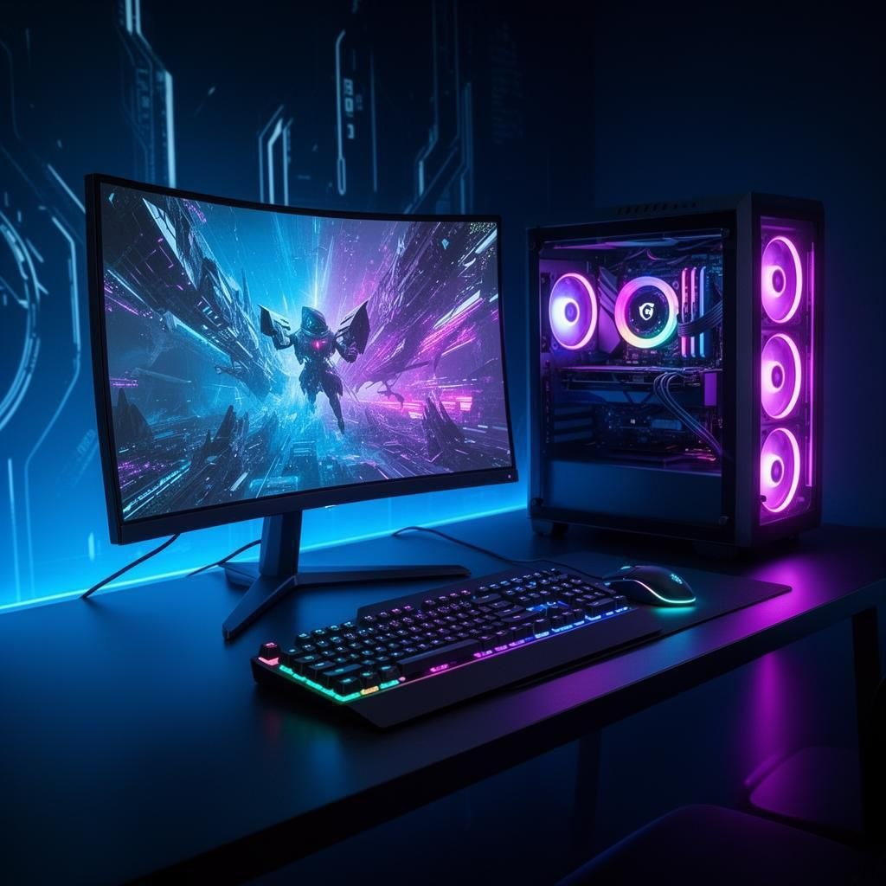
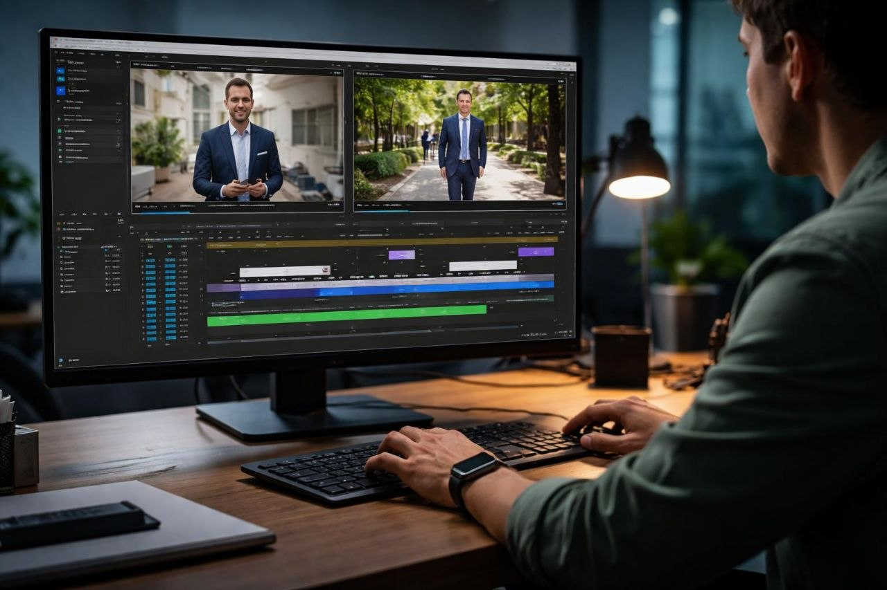
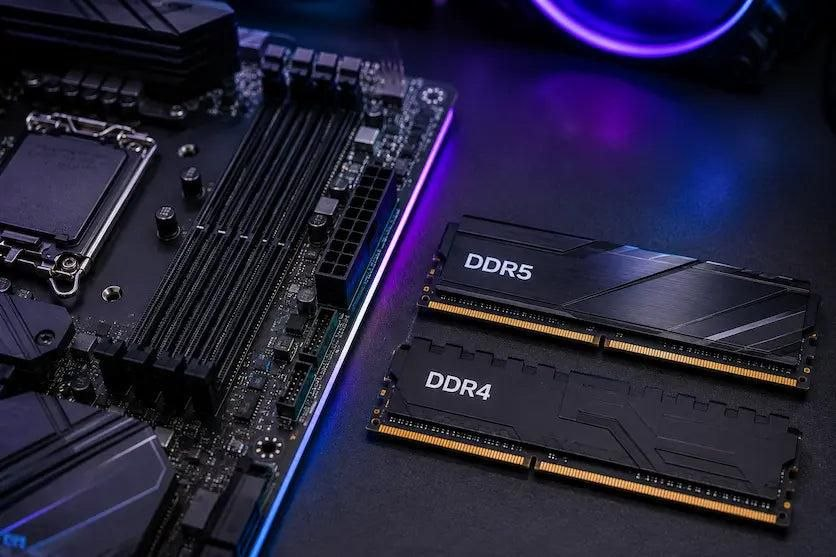

Have you ever opened a few apps on your computer and suddenly noticed that everything started running slowly? Maybe your browser stopped responding, your game began to lag, or your editing software became difficult to use. One possible reason is that your computer does not have enough RAM.
RAM is one of the most important parts of a computer. It helps your system run programs, switch between tasks, open large files, and handle demanding work. But how much RAM do you actually need? Is 8GB still enough? Should you buy 16GB? Is 32GB the best choice? And who really needs 64GB?
In this guide, we will compare 8GB, 16GB, 32GB, and 64GB RAM in simple language. We will look at gaming, programming, web and app development, video editing, graphics design, 3D rendering, AI development, and everyday computer use. By the end, you should have a much clearer idea of which RAM capacity makes sense for your needs.
1. What Is RAM?
RAM stands for Random Access Memory. It is a type of temporary memory that your computer uses while it is running.
Think of your computer's storage drive as a cupboard and RAM as your work desk. Your cupboard can store many things for a long time, but you bring the things you are currently using onto your desk. A bigger desk gives you more space to work on several things at once.
RAM works in a similar way. When you open a browser, game, editing program, or other software, your computer loads the information it needs into RAM. This allows the processor to access that information quickly.
Unlike an SSD or HDD, RAM does not normally keep your data after the computer is turned off. That is why it is called temporary or volatile memory.
2. How Does RAM Work?
Your computer uses several components together. The processor (CPU) performs calculations and instructions. The storage drive keeps your files and programs. RAM holds the information that your system is actively using.
For example, imagine you open a browser with ten tabs, a music player, and an image editor. Your computer needs memory for the operating system and all those open programs. RAM gives them space to work.
When available RAM becomes low, the operating system may move some less-used memory data to a storage drive. This is often called virtual memory or a page file. An SSD is much slower than RAM, so relying heavily on this process can make your computer feel less responsive.
More RAM does not automatically make every computer faster. It helps most when your current memory capacity is not enough for the tasks you want to run.
3. 8GB vs 16GB vs 32GB vs 64GB RAM: Quick Comparison
Here is a simple overview of what each capacity is generally suitable for. Actual results depend on your operating system, software, project size, and other hardware.
| RAM | Best For | Typical Experience |
|---|---|---|
| 8GB | Basic browsing, documents, light tasks | Limited multitasking |
| 16GB | Everyday use, study, moderate gaming, light development | Good for many users |
| 32GB | Modern gaming, development, editing, multitasking | Comfortable for demanding work |
| 64GB | Heavy editing, large projects, virtual machines, professional workloads | More room for memory-heavy tasks |
Remember that these are general guidelines, not strict limits. A simple task can run on less memory, while a very large project may need more. Your software requirements should guide your final decision.
4. What Can You Do With 8GB RAM?
8GB RAM is an entry-level capacity for many modern computers. It can still handle basic tasks, but you need to be careful about how many programs you keep open.
Tasks that usually work with 8GB
- Browsing websites with a small number of tabs.
- Writing documents and creating basic spreadsheets.
- Watching videos and listening to music.
- Attending online classes and video meetings.
- Using simple photo editing tools.
- Running lightweight applications.
Where 8GB can become a problem
Modern browsers and operating systems can use a noticeable amount of memory. If you open many tabs while running several other applications, your computer may become slow.
Large games, professional video editing, complex development projects, and heavy multitasking can also be difficult with only 8GB. Some newer applications may require more memory than this to run comfortably.
Our view: Choose 8GB only if your budget is limited and your work is basic. If you are buying a new computer in 2026, 16GB is a more practical starting point for most people.
5. What Can You Do With 16GB RAM?
16GB RAM is a good starting point for many home, office, student, and general-purpose computers. It gives you more room to run multiple programs without constantly worrying about memory usage.
Tasks that work well with 16GB
- Everyday browsing and office applications.
- Online classes, meetings, and communication apps.
- Light to moderate programming.
- Web development with a code editor and a local development server.
- Many games, depending on their requirements.
- Basic photo editing and light graphic design.
- Some 1080p video editing projects.
For example, you may be able to use a code editor, a browser, a terminal, and a few communication apps together. However, a large project with several development tools, containers, and virtual machines can use more memory.
16GB is also enough for many gaming systems. But if you play demanding games while keeping a browser, streaming software, and other programs open, 32GB can provide more breathing room.
Our view: 16GB is a sensible choice for general users and people who do light professional work. It is not the best choice for every demanding workload, but it is a strong starting point.
6. What Can You Do With 32GB RAM?
32GB RAM is a strong all-round choice for people who use their computers for both entertainment and serious work. It gives demanding applications more room and makes multitasking easier.
Tasks that benefit from 32GB
- Modern gaming with other applications running in the background.
- Web development with larger projects and multiple tools.
- App and software development.
- Running local databases and development services.
- Video editing, including many 4K workflows.
- Large Photoshop or similar design projects.
- Moderate 3D modelling and rendering workloads.
- Running some virtual machines and containers.
Imagine working on a website while running a local server, a database, a browser with many tabs, and a code editor. With 32GB, you have more memory available for all these tools.
For gaming, 32GB is a comfortable capacity for many modern gaming PCs. It does not mean every game will use all 32GB, but it gives you extra room for background apps and future software needs.
Our view: If you are a gamer, developer, content creator, or someone who regularly runs several demanding applications, 32GB is often the best balance between capacity and cost.
7. What Can You Do With 64GB RAM?
64GB RAM is designed for users who regularly work with large files, complex projects, and memory-heavy software. It is not necessary for everyone, but it can be very useful when your work actually needs it.
Tasks that can benefit from 64GB
- Heavy 4K video editing and complex timelines.
- Large 3D scenes and professional creative projects.
- Running several virtual machines at the same time.
- Large software development environments.
- Large datasets and memory-heavy data analysis.
- Local AI and machine learning workflows that need system memory.
- Heavy multitasking with many professional applications.
For example, a developer may run multiple virtual machines, containers, databases, and large applications together. A video editor may work with several high-resolution video files and complex effects. These workloads can benefit from having more memory available.
However, buying 64GB does not automatically make a computer twice as fast as one with 32GB. If your programs only need 12GB, having 64GB will not create a major performance improvement by itself.
Our view: Choose 64GB when you have a clear need for it, or when your professional workload is expected to grow. For ordinary browsing, office work, and most gaming, it is usually more than necessary.
8. How Much RAM Do You Need for Gaming?
Gaming is one of the most common reasons people upgrade their RAM. But the right amount depends on the games you play, your graphics settings, background applications, and the rest of your system.

8GB for gaming
8GB may run some older or lightweight games, but it is a limited amount for a modern gaming PC. You may experience stuttering or memory pressure, especially when other applications are open.
16GB for gaming
16GB can still be enough for many games. It is a reasonable option for budget gaming systems, especially if you close unnecessary background applications.
32GB for gaming
32GB gives you more room for modern games, launchers, browsers, voice chat, recording software, and other background tasks. It is a comfortable choice for many gaming PCs in 2026.
64GB for gaming
Most gamers do not need 64GB just to play games. It may be useful if you also stream, create content, run virtual machines, use large mods, or perform other memory-heavy work at the same time.
One important point: more RAM does not always mean more FPS. If a game already has enough memory, increasing RAM capacity may make little or no difference to frame rates. Your CPU and GPU often have a much bigger effect on gaming performance.
9. How Much RAM Do You Need for Programming and Development?
Programming can use very little or a lot of memory. It depends on the language, development tools, project size, and how many services you run at once.
8GB for programming
You can learn basic programming with 8GB. Simple scripts, small projects, and lightweight code editors can work. However, larger IDEs, browser tabs, and local services may quickly use the available memory.
16GB for programming
16GB is a good starting point for students and developers working on small or medium-sized projects. It can handle many common coding tasks, web development, and basic application development.
32GB for programming
32GB is a better choice for full-stack developers and people working with larger projects. It gives you more room for code editors, browsers, local databases, build tools, Docker containers, and testing environments.
64GB for programming
64GB can help developers who work with several virtual machines, large monorepos, complex software systems, multiple containers, or memory-heavy workloads. It is not required for every programmer.
If you are learning HTML, CSS, JavaScript, or Python, you do not need to buy 64GB RAM. Start with a suitable system for your actual projects and upgrade when your workload requires it.
10. How Much RAM Do You Need for Video Editing?
Video editing can use a lot of memory, especially when you work with high-resolution footage, long timelines, multiple video layers, effects, and large media files.

8GB for video editing
8GB is very limited for modern video editing. You may be able to perform simple edits on lightweight software, but large projects can become difficult.
16GB for video editing
16GB can work for basic 1080p editing and simple projects. It may be enough for short videos with a limited number of effects and tracks.
32GB for video editing
32GB is a good starting point for more serious editing. It can handle many 1080p and 4K workflows, depending on the editing software, codec, effects, and project complexity.
64GB for video editing
64GB can be useful for demanding 4K projects, complex timelines, heavy effects, motion graphics, and professional production work. Some very large projects may benefit from even more memory.
Keep in mind that video editing performance also depends on your CPU, GPU, storage speed, and the type of video files you use. More RAM alone cannot solve every editing performance problem.
11. RAM for Graphics Design and 3D Rendering
Graphics design and 3D work can have very different memory needs. A simple logo design is not the same as a large Photoshop project or a detailed 3D scene.
Graphics design
- 8GB: Basic design work with small files may be possible.
- 16GB: A practical starting point for many design tasks.
- 32GB: Better for large files, multiple applications, and complex projects.
- 64GB: Useful for very large documents and demanding professional workflows.
3D modelling and rendering
- 8GB: Only suitable for very simple projects.
- 16GB: Can handle basic modelling and smaller scenes.
- 32GB: A better choice for more detailed scenes and regular 3D work.
- 64GB: Helpful for complex scenes, large assets, and professional workloads.
Some 3D software and rendering engines also use GPU memory, known as VRAM. System RAM and GPU VRAM are different things. A computer with 64GB system RAM can still run into a GPU memory limit if its graphics card does not have enough VRAM.
12. How Much RAM Do You Need for AI and Machine Learning?
AI development is another area where memory requirements can change a lot. Learning Python and building a small machine learning project is very different from running a large AI model locally.
8GB for AI learning
You can learn basic Python and follow small tutorials with 8GB, but larger datasets and development tools may be difficult to run together.
16GB for AI development
16GB can be enough for learning machine learning, writing Python code, and working with smaller datasets. Cloud-based AI services can also reduce the amount of local hardware you need.
32GB for AI development
32GB provides more room for local development environments, data processing, notebooks, and some smaller local AI workflows.
64GB for local AI workloads
64GB can help when working with larger datasets, local models, and memory-heavy applications. But it does not guarantee that every AI model will run on your computer.
There is an important difference between system RAM and GPU VRAM. Many AI workloads depend heavily on GPU memory. A model may need more VRAM than your graphics card has, even if your computer has plenty of system RAM.
For serious AI development, consider your GPU, VRAM, CPU, storage, and software requirements alongside RAM capacity.
13. How Much RAM Do You Need for Everyday Use?
If you mainly use your computer for browsing, watching videos, writing documents, online meetings, and social media, you do not need an extremely powerful system.
- 8GB: Can handle basic everyday tasks, but multitasking may be limited.
- 16GB: A comfortable choice for most everyday users.
- 32GB: Useful if you keep many applications and browser tabs open.
- 64GB: Usually unnecessary for normal everyday use.
For most students, home users, and office workers, 16GB is a sensible target. If you want more room for demanding applications and future workloads, 32GB is a good step up.
14. DDR4 vs DDR5: What Is the Difference?
DDR4 and DDR5 are different generations of computer memory. DDR5 is newer and can offer higher memory speeds and greater bandwidth. DDR4 is an older generation that is still used in many computers.

| Feature | DDR4 | DDR5 |
|---|---|---|
| Generation | Older | Newer |
| Memory speed | Generally lower | Generally higher |
| Bandwidth | Lower than comparable DDR5 configurations | Higher potential bandwidth |
| Compatibility | Requires a DDR4-compatible motherboard | Requires a DDR5-compatible motherboard |
DDR4 and DDR5 have different physical designs and electrical requirements. You cannot install a DDR5 memory module into a DDR4-only motherboard, or the other way around.
Also, DDR5 is not automatically the best upgrade for an older computer. Your motherboard and processor must support it. If you already own a good DDR4 system, upgrading the entire platform just to get DDR5 may not be worth the cost.
15. Single Channel vs Dual Channel RAM
RAM channel configuration affects how memory communicates with the processor. In a typical dual-channel desktop setup, two compatible memory modules can provide more memory bandwidth than one module alone.
For example, compare these two configurations:
- One 16GB RAM module: 16GB in a typical single-channel configuration.
- Two 8GB RAM modules: 16GB in a typical dual-channel configuration.
Both configurations provide 16GB of capacity, but the two-module setup can offer higher memory bandwidth when dual-channel mode is supported and configured correctly.
This can matter for some games, applications, and systems that use integrated graphics. The real-world improvement depends on the hardware and workload.
Many modern desktop motherboards recommend installing two modules in specific slots. Check your motherboard manual to find the correct slots. Laptop memory configurations can be different.
16. Does RAM Speed Matter?
Yes, RAM speed can affect performance, but capacity is often the first thing to consider when you do not have enough memory.
RAM speed is commonly shown in MT/s. You may see names such as DDR4-3200 or DDR5-6000. These numbers describe the memory's data transfer rate.
Faster memory can improve performance in some workloads, but the result depends on your processor, motherboard, memory configuration, and application.
Before buying faster RAM, check the memory specifications supported by your CPU and motherboard. Some systems may run memory at a lower speed than the number printed on the RAM package unless the correct memory profile is enabled in the BIOS.
17. Can You Mix Different RAM Sizes or Speeds?
In many cases, you can install RAM modules with different capacities or speeds, but it is not always the best idea.
For example, you might install an 8GB module alongside a 16GB module. The system may work, but the exact memory mode and performance depend on the platform. Some systems can use a dual-channel arrangement for matching portions of memory and a different mode for the remaining portion.
If you mix modules with different rated speeds, the system will commonly run them at a speed supported by all installed modules and the memory controller. The fastest module does not guarantee that the entire setup will run at its advertised speed.
Before mixing RAM, check these things
- Make sure the memory generation is supported by your motherboard.
- Check the maximum capacity supported by your motherboard and CPU.
- Use compatible voltage and memory specifications.
- Check whether the modules can run together at a stable speed.
- For the easiest setup, use a matched memory kit when possible.
18. How to Choose the Right RAM in 2026
Choosing RAM is easier when you start with the work you actually do. Do not buy 64GB just because it sounds more powerful. At the same time, do not choose 8GB for a computer that you plan to use for demanding work.
| Your Work | Suggested RAM |
|---|---|
| Basic browsing and documents | 8GB–16GB |
| Students and office users | 16GB |
| General gaming | 16GB–32GB |
| Programming and web development | 16GB–32GB |
| App and software development | 32GB recommended for heavier projects |
| Regular 4K video editing | 32GB–64GB |
| Professional graphics and 3D work | 32GB–64GB or more, depending on projects |
| Local AI and large datasets | 32GB–64GB or more, depending on workload |
Check compatibility before buying
First, check your motherboard or laptop specifications. Find out which memory generation it supports, how many memory slots are available, and the maximum memory capacity. Also check the processor's memory support.
Think about future upgrades
If you buy a computer with 16GB today, check whether you can add more memory later. Some laptops have memory soldered to the motherboard, which means you cannot upgrade it. Desktop computers usually offer more upgrade flexibility, but motherboard limits still apply.
Choose capacity before chasing speed
If your computer regularly runs out of memory, moving from 8GB to 16GB or from 16GB to 32GB can be more useful than buying slightly faster RAM with the same capacity.
Our Final Recommendation
For most people buying a computer in 2026, 16GB is a sensible minimum target and 32GB is a comfortable choice for gaming, development, and creative work.
- Choose 8GB if your needs are very basic and your budget is tight.
- Choose 16GB for everyday use, study, office work, and light development.
- Choose 32GB for gaming, programming, multitasking, and regular content creation.
- Choose 64GB for heavy editing, complex 3D projects, virtual machines, and memory-intensive professional work.
The best RAM capacity is not the biggest number. It is the amount that comfortably handles your applications without making you pay for memory you will rarely use.
19. Frequently Asked Questions
Is 8GB RAM enough in 2026?
8GB can still handle basic browsing, documents, video playback, and lightweight applications. However, it is limited for modern multitasking, gaming, and professional software. For a new computer, 16GB is a more practical starting point.
Is 16GB RAM enough for gaming?
16GB is enough for many games, especially when you close unnecessary background applications. Some newer games and multitasking setups can benefit from 32GB.
Is 32GB RAM overkill?
Not necessarily. It can be useful for modern gaming, programming, development, video editing, and heavy multitasking. For basic office work and browsing, it may be more than you need.
Do I need 64GB RAM for gaming?
Most gamers do not need 64GB. A 16GB or 32GB setup is usually a more sensible choice, depending on the games and background applications you use.
Does more RAM increase FPS?
Not always. More RAM can help if your current system does not have enough memory. If a game already has enough RAM, adding more capacity may not increase FPS. CPU and GPU performance also play major roles.
Is DDR5 better than DDR4?
DDR5 is a newer memory standard with higher bandwidth potential. However, your motherboard and CPU must support it. The best choice depends on your system and budget.
Is 2x8GB better than 1x16GB?
When the system supports dual-channel memory, two 8GB modules can provide more memory bandwidth than one 16GB module. However, two slots will be occupied. Check your system's upgrade options before choosing.
Can I use 8GB and 16GB RAM together?
Some computers support mixed-capacity memory modules. However, compatibility, speed, and memory-channel behavior depend on the system. Check the motherboard or laptop specifications first.
How much RAM do I need for 4K video editing?
32GB is a useful starting point for many 4K editing workflows. Complex projects, effects, and professional timelines may benefit from 64GB or more. Software, CPU, GPU, and storage also affect performance.
Is RAM the same as storage?
No. RAM is temporary working memory used by active programs. An SSD or HDD stores files and applications for long-term use, even when the computer is turned off.
Does AI development need more RAM or VRAM?
It depends on the task. System RAM helps with datasets and general workloads, while GPU VRAM is important for many AI models and GPU-based tasks. They are different types of memory and cannot simply replace each other.
Final Thoughts
Choosing between 8GB, 16GB, 32GB, and 64GB RAM does not have to be confusing. Start by thinking about what you do on your computer every day. Basic users can work with less memory, while gamers, developers, and creators may benefit from more.
If you want a balanced computer for several years, 16GB is a good starting point and 32GB gives you more room for demanding tasks. If your work involves large video projects, complex 3D scenes, virtual machines, or local AI workloads, 64GB may be worth considering.
Most importantly, check your system's compatibility before buying. The right combination of RAM, processor, graphics card, and storage will give you a much better experience than focusing on memory capacity alone.